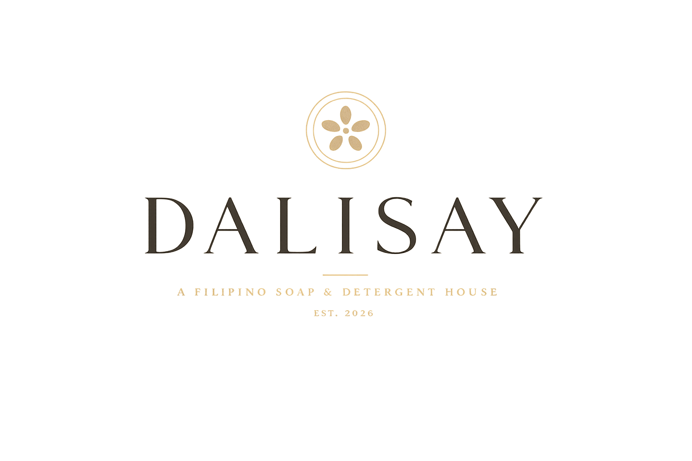
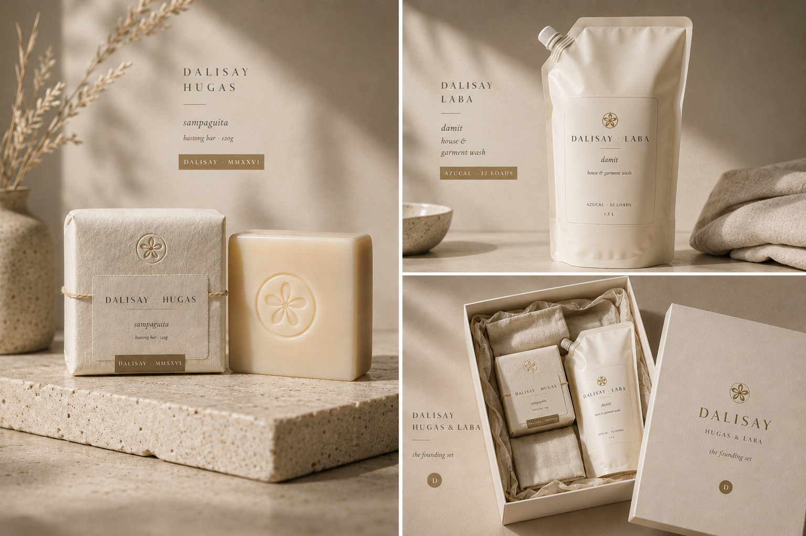
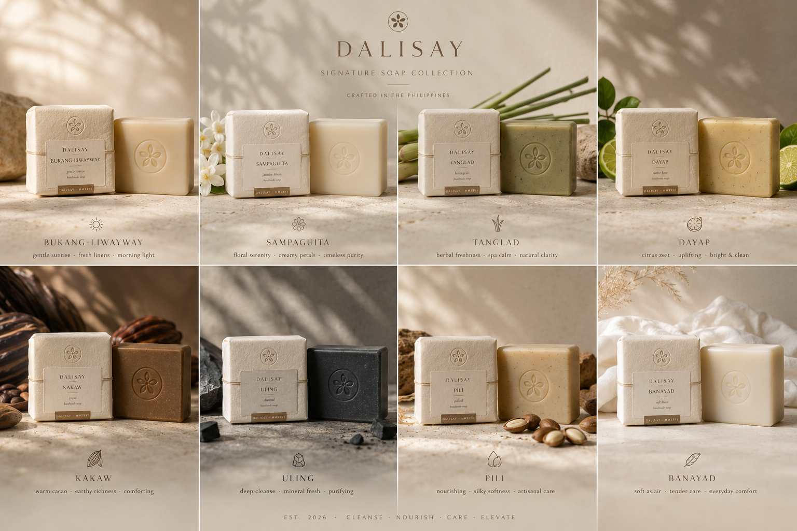
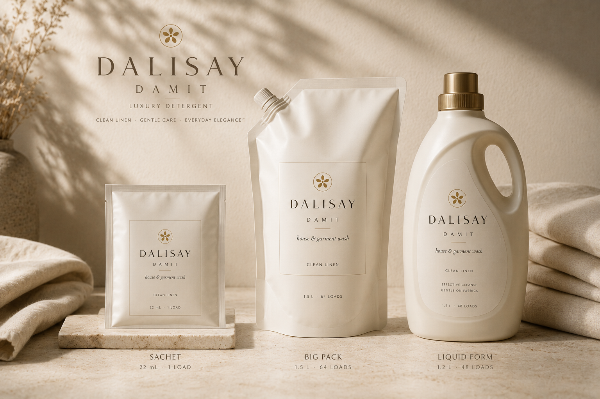

Dalisay is a Tagalog word.
It means pure, distilled, refined — what remains after everything unnecessary
has been gently set aside.
We make two things.
Soap. Detergent.
The bar that touches your skin in the morning.
The liquid that washes the linen that touches your skin at night.
Most of the world treats one as a luxury and the other as a chore.
We refuse this distinction.
Both are made by the same hands, from the same coconut, in the same atelier,
with the same patience.
A clean shirt deserves as much grace as a clean face.
A house of cleansing. The bar for the body. The liquid for the home. Two products, one philosophy: that everyday acts of cleaning are also acts of dignity.
The Filipino luxury cleansing house. Not a skincare brand. Not a wellness brand. Not a household brand either, in the conventional sense. A house that takes both ends of cleaning seriously — the body and the home — and treats them with the same craft, the same provenance, and the same paper-and-glass restraint.
The category we are building has a French precedent (Buly 1803, Compagnie de Provence) and a Japanese one (Daylight). It has no Filipino counterpart yet.
The bath. Cold-process soap bars, cured six weeks on cedar. Eight bars in the collection. For face, body, and hands.
The wash. Plant-derived liquid detergents and surface cleaners. Four formulations. For linen, dishes, floors, and the body's quietest companions — the clothes it lives inside.
No synthetic detergents in the bar. No phosphates, brighteners, or synthetic fragrance in the wash. Both lines pass the same ingredient standard.
The bar cures six weeks. The detergent ferments three. Time is the active ingredient in both.
Every oil, every botanical, every hand is Filipino, named, and traceable to a province.
A bar that makes the bathroom smell like a small garden for six weeks. A detergent that makes a clean shirt smell, faintly, of lemongrass and sun. Two everyday rituals — washing the body, washing the clothes — restored to the standard they had a hundred years ago, before chemistry shouted at them.
One wordmark. Two pillar marks. One sampaguita. Each is a different volume of the same word.
The single D. Pressed into every cured bar; embossed on every bottle base.
The pillar mark for the soap line. On every bar wrap and gift box.
The pillar mark for the detergent line. On every bottle label and refill cap.
The botanical seal. Wax-stamped on every gift and on every certificate of cure.
"The same hand that washes the face washes the linen. The brand on both should match."
A shared palette across both pillars. Hugas leans into warm ivory and cacao; Laba leans into pearl and linen-blue. Both share the gold seal.
Hugas (the soap line) uses warmer accents: cacao, sampaguita blush, muted gold. The bath feels intimate, cellular, close to skin.
Laba (the detergent line) uses cooler accents: linen blue, sage, and pearl. The wash feels architectural, breezy, fresh-air. The blue is borrowed from the colour of indigo-rinsed linen drying in the sun — the colour of the country's oldest laundry tradition.
Both lines share the gold seal, the charcoal type, and the ivory paper. A patron's shelf, when both lines are present, reads as a single quiet composition with two related but distinguishable tones.
Reserved for the wordmark, the pillar names (HUGAS, LABA), the bar names, and the largest editorial moments. Always letter-spaced. Always restrained.
Wrap copy, bottle stories, ingredient notes, brand narrative.
Batch numbers, cure dates, weights, volumes, ingredient declarations, and — uniquely for the Laba line — dosing instructions and dilution ratios.
A small library of hand-drawn line marks — one per ingredient, used only on the product that contains it. No icon ever appears twice on the same wrap.
Rice — the morning bar.
The signature flower.
Lemongrass — clarifying.
Calamansi — brightening.
Cacao — nourishing.
Bamboo charcoal — deep clean.
Linen — for the Laba line.
Water — for dilution & rinse.
Vinegar — for the surface wash.
The bar gets paper. The detergent gets apothecary glass. Both get the wax seal. Both get the gold mark. Together, they look like a single house.

Hugas (the bar): unbleached FSC paper from Bulacan, wax seal in muted gold, raffia ties on gift sets. Laba (the detergent): apothecary-grade tinted glass for the counter bottle, brass pump or trigger (replaceable, lifetime-warrantied), pearl-card laminate for the 1L refill, returnable aluminum jug for the 2L Damit tower refill. Shared: the same Italiana wordmark, the same gold seal, the same charcoal type.
No plastic in either line. The brass pump is the only metal component the customer ever sees; everything else is glass, paper, wax, raffia, aluminum.
Every wrap and every label carries the same small print, in 6pt Jost caps: Batch No. · Make Date · Atelier (Pampanga) · Weight or Volume · Full Ingredient List · Maker's Initials. Transparency, miniaturised. The brand's signature small print.
Eight bars, each named in Tagalog. Each made for a different hand, a different hour, a different kind of skin.

Four bottles, each named in Tagalog. Each made for a different cleaning ritual of the home. None contain phosphates, optical brighteners, synthetic dyes, or synthetic fragrance.

Each Laba bottle is sold in three formats: the counter bottle (500ml, the daily-use vessel — apothecary glass with a brass pump or trigger), the refill (1L, in pearl card-and-aluminum laminate), and the tower refill (2L, for the Damit linen wash only, in a returnable aluminum jug).
The counter bottle is bought once. After that, only refills. The brand's mass-market efficiency comes from this: a small luxury counter bottle, used for years, refilled monthly.
Across the entire Laba line: no phosphates, no optical brighteners, no synthetic dyes, no synthetic fragrance, no parabens, no SLS/SLES, no quats, no chlorine, no microplastics. Every formulation is biodegradable to OECD 301B standard. Septic-safe. Greywater-safe. Safe to use in homes with children, infants, and animals.
The full ingredient list — INCI names with Filipino translation — is printed on every bottle in 6pt Jost. The list is short enough to fit.
Dalisay speaks the way a calm friend who reads poetry might speak about a bar of soap and a bottle of detergent. Specific. Brief. Warm without flattery. A little Filipino. Never marketing.
"Write as if the reader can already hold the bar and smell the linen. Your job is not to convince. Your job is to be remembered."
Natural light, real skin, real linen, real bars, real bottles. Photography that looks accidentally found, not commercially staged.
One bar, one shadow, one piece of unbleached linen. Side-lit by a window. Sometimes half-used, the patina visible. The bar should look like a small sculpture someone forgot to put away.
The Laba bottle on a marble counter beside a folded linen napkin and a clay water carafe. Late-afternoon sidelight. Never glossy. Never floating. The bottle photographed as if it belongs to a kitchen that has been in someone's family for thirty years.
The brand's secret weapon. White linen drying on a clothesline strung between two coconut trees, with afternoon light coming through it. A woman's hand reaching to take a sheet down. A wicker basket below. The image that sells the Damit linen wash without ever showing the bottle.
Filipino hands and Filipino faces — all of them. Tagalog, Bisaya, Ilocano, Tboli, Ifugao. Mestizo and morena. Hands holding bars. Hands wringing linen. Faces washing in cold water. The Filipino face has not been allowed to be the global luxury face. We change that.
Two product worlds, one feed. The bath posts and the laundry posts should look like they were taken on the same Sunday morning, in the same house.
Three posts a week. Never more. Posting less is the luxury. The brand should feel like it has somewhere else to be.
A rolling rhythm: bath still · linen still · ingredient close-up · face · Italiana card · home still · repeat. The grid reads as a magazine spread.
Once a week: white linen on a clothesline somewhere in the country. Batanes one week, Iloilo the next, Sagada the next. The brand's quietest, most-shared content.
Once a week: today's bar at the atelier. The cure-end date written in chalk beside it. The most-engaged content the brand produces.
One sentence. Sometimes Tagalog, sometimes English. Sometimes only an em-dash and an ingredient name. Hashtags as a single comment, never in the caption.
Every DM replied to within 24 hours by a real person, signing with a single initial. Our voice in private is our voice in public.